Chapter 4 Data visualisation
Chapter lead author: Benjamin Stocker
4.1 Learning objectives
In this chapter you will learn how to visualize data for exploration or publication.
You will learn among others the:
- appropriate choice of visualisations for different data types and different aspects of the data
- grammar of graphics, i.e., using the {ggplot2} library
- the proper use of colours in visualization
4.2 Tutorial
Visualizations often take the center stage of publications and are often the main vehicles for transporting information in scientific publications and (ever more often) in the media. Visualizations communicate data and its patterns in visual form. Visualizing data is also an integral part of the exploratory data analysis cycle. Visually understanding the data guides its transformation and the identification of suitable models and analysis methods.
The quality of a data visualization can be measured by its effectiveness of conveying information about the data and thus of answering a question with the data and telling a story. Different aspects determine this effectiveness, including the appropriateness of visualization elements, the intuitiveness of how information can be decoded from the visualization by the reader, the visual clarity and legibility (taking into account the vision and potential vision deficiencies of the reader), the visual appeal, etc. This tutorial introduces data visualization under the premise that not all aspects of data visualization are a matter of taste. There are appropriate and less appropriate ways of encoding data in visual form.
This tutorial is inspired by the comprehensive and online available textbook Fundamentals of Data Visualization by Claus O. Wilke. Another excellent resource is the Chapter Data Visualisation in R for Data Science by Hadley Wickham
4.2.1 The grammar of graphics
In Chapter 3, we learned about axes of variation in the data. For example, time is an axis of variation in our example data half_hourly_fluxes, or site identity and the date are axes of variation in our example data daily_fluxes. We have also learned that we can aggregate over axes of variation, and that we can often separate an axis of variation into a hierarchy of subordinate axes of variation (e.g., years, months, days, and a half-hourly time axis).
In this chapter, we will be working mainly with the same half-hourly time series data of ecosystem-atmosphere fluxes and parallel measurements of meteorological variables - as in Chapters 1 and 3. For time series data, the entry point of the exploratory data analysis cycle may be a visualization of some variable of interest (here GPP_NT_VUT_REF) against time:
half_hourly_fluxes <- readr::read_csv("data/FLX_CH-Lae_FLUXNET2015_FULLSET_HH_2004-2006_CLEAN.csv")## Rows: 52608 Columns: 20
## ── Column specification ────────────────────────────────────────────────────────
## Delimiter: ","
## dbl (18): TA_F, SW_IN_F, LW_IN_F, VPD_F, PA_F, P_F, WS_F, GPP_NT_VUT_REF, N...
## dttm (2): TIMESTAMP_START, TIMESTAMP_END
##
## ℹ Use `spec()` to retrieve the full column specification for this data.
## ℹ Specify the column types or set `show_col_types = FALSE` to quiet this message.plot(half_hourly_fluxes$TIMESTAMP_START, half_hourly_fluxes$GPP_NT_VUT_REF, type = "l")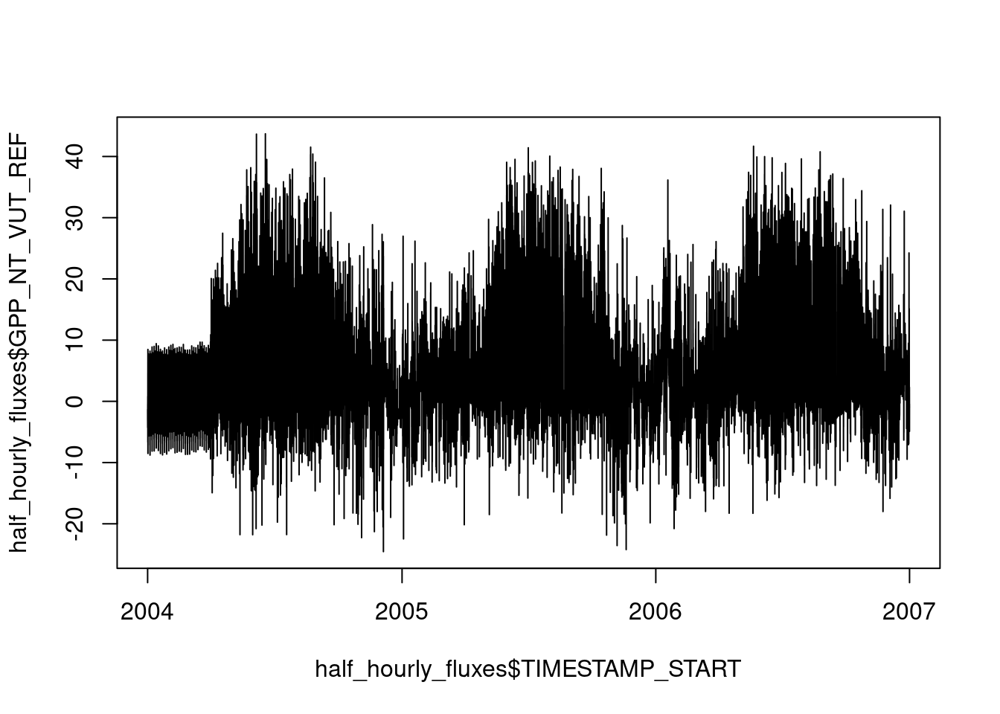
To reproduce this code chunk, you can download the file
FLX_CH-Lae_FLUXNET2015_FULLSET_HH_2004-2006_CLEANfrom here and read it from the local path where the file is stored on your machine. All data files used in this tutorials are stored here.
You may notice the spurious-looking values on the left, in the first third of year 2004. This demonstrates the role of visualisation in understanding the data and its quality. We’ll revisit this point later in this Chapter.
From (Wilke):
“All data visualizations map data values into quantifiable features of the resulting graphic. We refer to these features as aesthetics.”
Applied to our example, the aesthetics are the x-axis and the y-axis of a cartesian coordinate system. TIMESTAMP_START is mapped onto the x-axis, GPP_NT_VUT_REF is mapped onto the y-axis, and their respective values specify the position of points in the cartesian coordinate system that are then connected with lines - making up the geometrical object that represents the data. Often, the aesthetic that is used to plot the target variable against corresponds to a known axis of variation in the data.
The notion of mapping data onto aesthetics and using objects whose geometry is defined by the aesthetics gives rise to the grammar of graphics and to the {ggplot2} R package for data visualisation (which we will use throughout the remainder of this course). The equivalent {ggplot2} code that follows the philosophy of the grammar of graphics is:
ggplot(data = half_hourly_fluxes, aes(x = TIMESTAMP_START, y = GPP_NT_VUT_REF)) +
geom_line()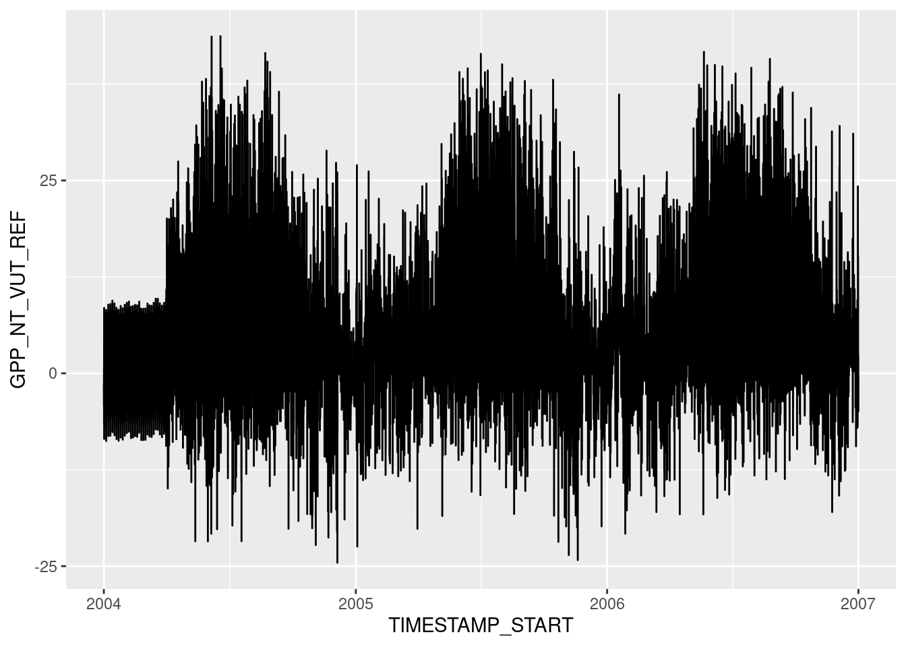
The argument provided by the aes() statement specifies the aesthetics (x, and y) and which variables in data are mapped onto them. Once this is specified, we can use any suitable geometrical object that is defined by these aesthetics. Here, we used a line plot specified by geom_line(). Note also that the different objects to creating a ggplot graph are connected with a +, which takes a similar role as the pipe (|>).
The data visualisation above is a dense plot and we cannot distinguish patterns because variations in GPP happen at time scales that are too narrow for displaying three years of half-hourly data in one plot. GPP varies throughout a day just as much as it varies throughout a season. To see this, we can focus on a narrower time span (selecting rows by index using dplyr::slice() in the code below). Visual clarity is also facilitated by an appropriate labeling (title and axes labels using labs()) and by a reduction of displayed elements to a minimum (therefore, the changing of the formatting theme by theme_classic()):
# prepare plot data
plot_data <- half_hourly_fluxes |>
dplyr::slice(24000:25000)
# plot figure
plotme <- ggplot(
data = plot_data,
aes(x = TIMESTAMP_START, y = GPP_NT_VUT_REF)) +
geom_line() +
labs(title = "Gross primary productivity",
subtitle = "Site: CH-Lae",
x = "Time",
y = expression(paste("GPP (", mu,"mol CO"[2], " m"^-2, "s"^-1, ")"))) +
theme_classic()
plotme
Figure 4.1: An example time series created with {ggplot2}.
Find a complete reference to {ggplot2} here. The grammar of graphics has found its way also into Python and you can use ggplot using the plotnine Python package (see here).
4.2.2 Every data has its representation
In the above example, we mapped two continuous variables (TIMESTAMP_START and GPP_NT_VUT_REF) onto the aesthetics x, and y to visualize time series data. A line plot is an appropriate choice for such data as points are ordered along the time axis and can be connected by a line. Different “geometries” are suitable for visualizing different aspects of the data, and different variable types are suited to mapping onto different aesthetics. Common, available aesthetics are shown in Fig. 4.2 and can be allocated to variable types:
- Continuous variables: position, size, color (a color gradient), line width, etc.
- Categorical variables: shape, color (a discrete set of colors), line type, etc.
.](figures/common-aesthetics-1.png)
Figure 4.2: Common aesthetics to display different variable types. Figure from Wilke.
{kind=link}
Not only the different aesthetics, but also the type of geometry (the layers of the visualization added to a plot by + geom_*()) goes with certain types of variables and aspects of the data (but not with others). The sub-sections below provide a brief categorization of data visualization types. A more comprehensive overview is given by GGPlot2 Essentials for Great Data Visualization in R by Alboukadel Kassambara.
4.2.2.1 One value per category
Probably the simplest case of data visualization is where a single value is shown across a categorical variable. This calls for a bar plot (geom_bar()). In the example below, we plot the mean GPP for each month. The “custom plot” shown below is a demonstration for what you can do by combining different elements with {ggplot2}. Try to understand the command for creating the object plot_2. Both examples are based on the data frame daily_fluxes which we created in Chapter 3.
# read in demo daily data
# as saved in the previous chapter
daily_fluxes <- read_csv("data/daily_fluxes.csv")## Rows: 1096 Columns: 6
## ── Column specification ────────────────────────────────────────────────────────
## Delimiter: ","
## dbl (5): GPP_NT_VUT_REF, n_datapoints, n_measured, SW_IN_F, f_measured
## date (1): date
##
## ℹ Use `spec()` to retrieve the full column specification for this data.
## ℹ Specify the column types or set `show_col_types = FALSE` to quiet this message.# Aggregate to monthly
mdf <- daily_fluxes |>
dplyr::mutate(month = month(date, label = TRUE)) |>
dplyr::group_by(month) |>
dplyr::summarise(GPP_NT_VUT_REF = mean(GPP_NT_VUT_REF))
# Bar plot
plot_1 <- ggplot(
data = mdf,
aes(x = month, y = GPP_NT_VUT_REF)) +
geom_bar(stat = "identity") +
theme_classic() +
labs(title = "Bar plot",
x = "Month",
y =expression(paste("GPP (", mu,"mol CO"[2], " m"^-2, "s"^-1, ")")))
# Custom plot
plot_2 <- ggplot(
data = mdf,
aes(x = month, y = GPP_NT_VUT_REF)) +
geom_segment(aes(x = month, xend = month, y = 0, yend = GPP_NT_VUT_REF),
size = 3, color = "grey40") +
geom_point(aes(x = month, y = GPP_NT_VUT_REF), size = 8, color = "tomato") +
geom_text(aes(x = month, y = GPP_NT_VUT_REF, label = format(GPP_NT_VUT_REF, digits = 2)),
size = 3, color = "white") +
theme_classic() +
labs(title = "Custom plot",
x = "Month",
y = expression(paste("GPP (", mu,"mol CO"[2], " m"^-2, "s"^-1, ")"))) +
scale_y_continuous(limits = c(0, 8.75), expand = c(0, 0)) +
coord_flip()
# combine plots
cowplot::plot_grid(plot_1, plot_2)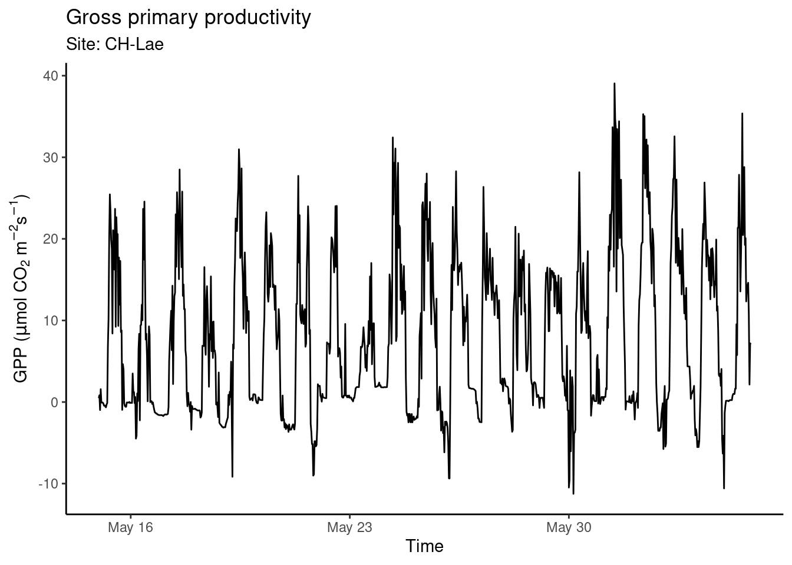
Above, we created two objects, plot_1 and plot_2, that contain the instructions for creating the plots. To combine multiple sub-plots within panels of a single plot, we used cowplot::plot_grid() from the {cowplot} library.
Note also the stat = "identity" specification within the geom_bar() function call. This is required when the bar height is specified by a single value within each category (month in the example above). To visualize not a value per se but the count of values within categories, use stat = "count" to get the equivalent result as when aggregating by taking the number of observations within categories explicitly using the function dplyr::summarise(). This equivalency is demonstrated below.
# subset plot data and count occurences of bad data (NEE_VUT_REF_QC == 0)
df_count <- half_hourly_fluxes |>
dplyr::filter(NEE_VUT_REF_QC == 0) |>
dplyr::group_by(NIGHT) |>
dplyr::summarise(count = n())
# separate aggregation
plot_1 <-ggplot(
data = df_count,
aes(x = NIGHT, y = count)) +
geom_bar(stat = "identity") +
labs(subtitle = "Count via 'summarise' and 'stat = identiy'") +
theme_classic()
# prepare data (not summarizing counts)
half_hourly_fluxes_bad <- half_hourly_fluxes |>
dplyr::filter(NEE_VUT_REF_QC == 0)
# implicit aggregation by 'stat'
plot_2 <- ggplot(
data = half_hourly_fluxes_bad,
aes(x = NIGHT)) +
geom_bar(stat = "count") +
labs(subtitle = "Count directly via 'stat = count'") +
theme_classic()
# combine plots
cowplot::plot_grid(plot_1, plot_2)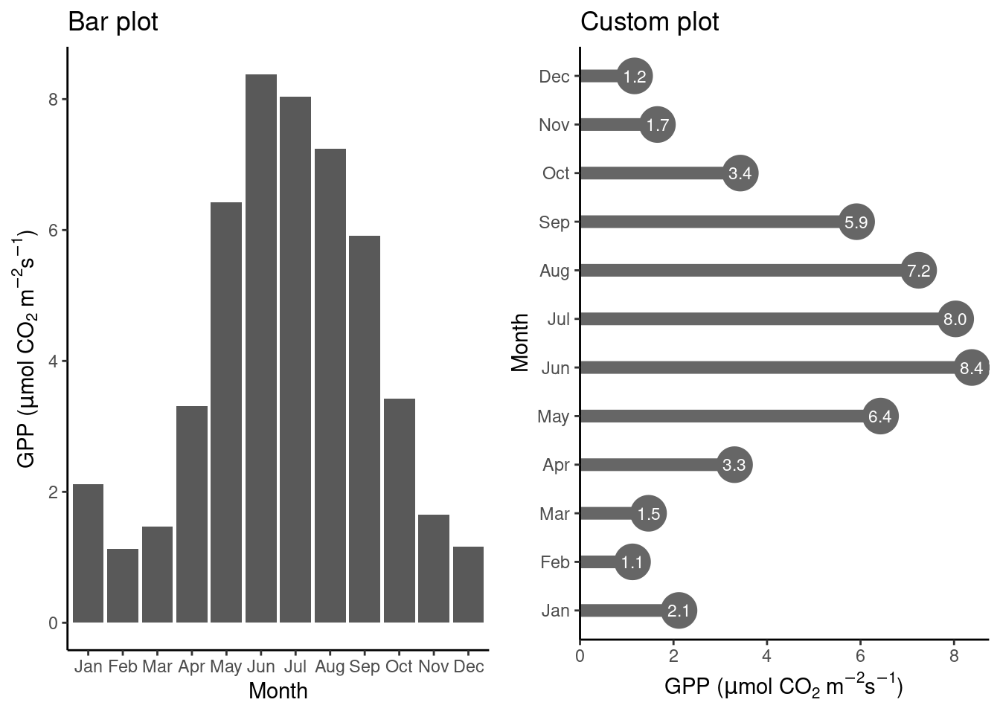
4.2.2.2 Distribution of one variable
Examining the distribution of a variable is often the first step of exploratory data analysis. A histogram displays the distribution of numerical data by mapping the frequency (or count) of values within discrete bins (equally spaced ranges along the full range values of a given variable) onto the “height” of a bar, and the range of values within bins onto the position of the bar. In other words, it shows the count of how many points of a certain variable (below GPP_NT_VUT_REF) fall into a discrete set of bins. When normalizing (scaling) the “bars” of the histogram to unity, we get a density histogram. To specify the y-axis position of the upper end of the histogram bar as the density, use y = ..density.. in the aes() call. To show counts, use y = ..count...
ggplot(
data = half_hourly_fluxes,
aes(x = GPP_NT_VUT_REF, y = ..density..)
) +
geom_histogram(fill = "grey70", color = "black") +
geom_density(color = "red") + # we can overlay multiple plot layers!
labs(title = "Histogram and density",
x = expression(paste("GPP (", mu,"mol CO"[2], " m"^-2, "s"^-1, ")"))) +
theme_classic()## `stat_bin()` using `bins = 30`. Pick better value with `binwidth`.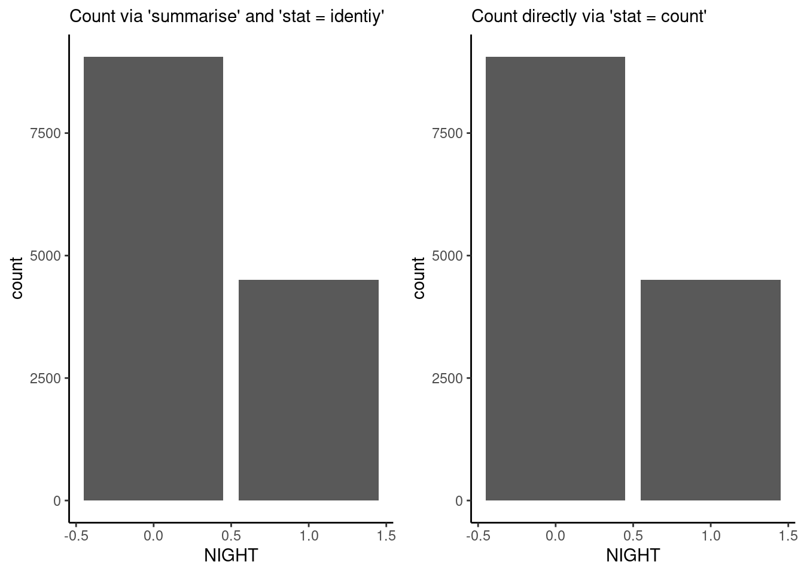
Note that the red line plotted by geom_density() on top of the density histogram visualises the density distribution in continuous (not discrete, or binned) form. Note also that both “geoms” share the same aesthetics with aes() specified in the ggplot() function call.
4.2.2.3 Distributions within categories
To visualize distributions of a single continuous variable within categories, perhaps the most common visualization type is the box plot. As described in Chapter 3, it shows the median (bold line in the center), the upper and lower quartiles, corresponding to the 25% and the 75% quantiles, often referred to as \(Q_1\) and \(Q_3\) , and given by the upper and lower edge of the box plot. The lines extending from the box edges visualize the range of \(( Q_1 - 1.5 (Q_3 - Q_1)\) to \(Q_3 + 1.5 (Q_3 - Q_1)\). Any point outside this range is plotted by a point.
The box plot is rather reductionist in showing the data (the vector of all values is reduced to the median, \(Q_1\) , \(Q_3\), and outlying points) and may yield a distorted picture of the data distribution and does not reflect information about the data volume. For this reason, several journals are now requiring individual data points or at least the number of data points to be shown in addition to each box. Below, points are added by geom_jitter() , where points are “jittered”, that is, randomly spread out along the x-axis. Violin plots are a hybrid of a density plot and a box plot. The shape of their edge is given by the density distribution of the points they represent.
# prepare plot data
set.seed(1985) # for random number reproducibility in sample_n() and jitter
half_hourly_fluxes_subset <- half_hourly_fluxes |>
sample_n(300) |>
mutate(Night = ifelse(NIGHT == 1, TRUE, FALSE))
# Boxplot
plot_1 <- ggplot(
data = half_hourly_fluxes_subset,
aes(x = Night, y = VPD_F)) +
geom_boxplot(fill = "grey70") +
labs(title = "Boxplot") +
labs(y = "VPD (hPa)") +
theme_classic()
# Box plot + jittered points
plot_2 <- ggplot(
data = half_hourly_fluxes_subset,
aes(x = Night, y = VPD_F)) +
geom_boxplot(fill = "grey70", outlier.shape = NA) +
geom_jitter(width = 0.2, alpha = 0.3) +
labs(title = "Boxplot + jitter points") +
labs(y = "VPD (hPa)") +
theme_classic()
# Violin plot
plot_3 <- ggplot(
data = half_hourly_fluxes_subset,
aes(x = Night, y = VPD_F)) +
geom_violin(fill = "grey70") +
labs(title = "Violin plot") +
labs(y = "VPD (hPa)") +
theme_classic()
# combine plots
cowplot::plot_grid(plot_1, plot_2, plot_3, ncol = 3)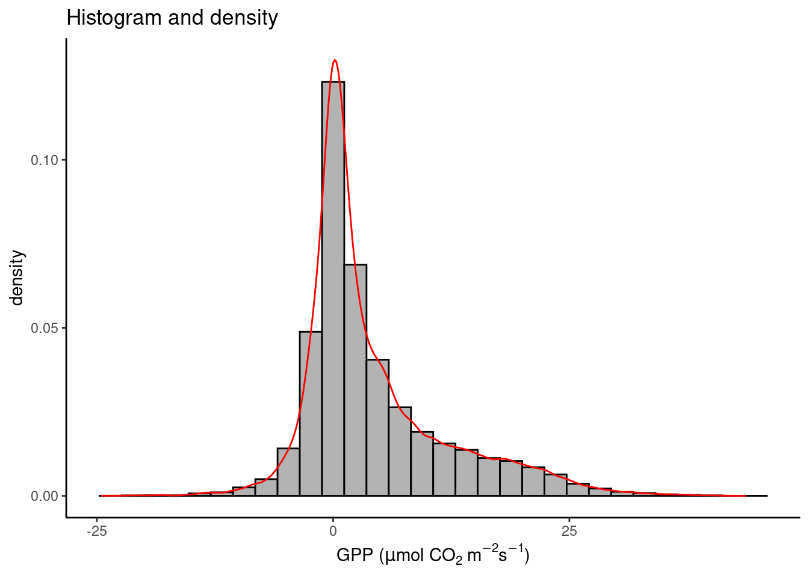
4.2.2.4 Regression of two continuous variables
Scatter plots visualize how two variables co-vary. The position of each point in a scatter plot is given by the simultaneously recorded value of two variables, provided in two columns along the same row in a data frame, and mapped onto two dimensions in a cartesian coordinate system. We can also say that two variables are regressed against each other.
In the figure below, we start with a simple scatter plot (a), regressing GPP against shortwave radiation. A visualization is supposed to tell a story with data. The positive and largely linear relationship between shortwave radiation and GPP is expected from theory and our process understanding of the dominant controls on photosynthesis - it’s mainly solar (shortwave) radiation (However, strictly speaking, this is supposed to emerge only at longer time scales, not in half-hourly data). The linear regression line, added by geom_smooth(method = "lm") in (a), indicates that relationship. You will learn more about linear regression in Chapter 8.
Are there additional variables that modify the relationship between solar radiation and GPP? To visually investigate this, we can map additional variables in our data set onto additional aesthetics. For example, at night, photosynthesis ceases as shown in (b). Here, the variable NIGHT was mapped onto the aesthetic color of same geometry (geom_point()). By default, ggplot() used a continuous color scale, as indicated by the color key on the right. It did so although NIGHT is a categorical (a binary) variable because in the data frame, NIGHT is stored as a numeric value (as can be checked by class(half_hourly_fluxes$NIGHT)). To avoid this, and automatically trigger the use of a color scheme that is suitable for categorical variables, we specify aes(x = SW_IN_F, y = GPP_NT_VUT_REF, color = as.factor(NIGHT)) in (c). In (d), temperature, a continuous variable, is mapped onto a continuous color scheme.
# prepare plot data
half_hourly_fluxes_subset <- half_hourly_fluxes |>
sample_n(1000)
# a
plot_1 <- ggplot(
data = half_hourly_fluxes_subset,
aes(x = SW_IN_F, y = GPP_NT_VUT_REF)) +
geom_point(size = 0.75) +
geom_smooth(method = "lm", color = "red") +
labs(x = expression(paste("Shortwave radiation (W m"^-2, ")")),
y = expression(paste("GPP (", mu,"mol CO"[2], " m"^-2, "s"^-1, ")"))) +
theme_classic()
# b
plot_2 <- ggplot(
data = half_hourly_fluxes_subset,
aes(x = SW_IN_F, y = GPP_NT_VUT_REF, color = NIGHT)) +
geom_point(size = 0.75) +
labs(x = expression(paste("Shortwave radiation (W m"^-2, ")")),
y = expression(paste("GPP (", mu,"mol CO"[2], " m"^-2, "s"^-1, ")"))) +
theme_classic()
# c
plot_3 <- ggplot(
data = half_hourly_fluxes_subset,
aes(x = SW_IN_F, y = GPP_NT_VUT_REF, color = as.factor(NIGHT))) +
geom_point(size = 0.75) +
labs(x = expression(paste("Shortwave radiation (W m"^-2, ")")),
y = expression(paste("GPP (", mu,"mol CO"[2], " m"^-2, "s"^-1, ")"))) +
theme_classic()
# d
plot_4 <- ggplot(
data = half_hourly_fluxes_subset,
aes(x = SW_IN_F, y = GPP_NT_VUT_REF, color = TA_F)) +
geom_point(size = 0.75) +
labs(x = expression(paste("Shortwave radiation (W m"^-2, ")")),
y = expression(paste("GPP (", mu,"mol CO"[2], " m"^-2, "s"^-1, ")"))) +
theme_classic() +
scale_color_viridis_c()
# combine plots
cowplot::plot_grid(plot_1, plot_2, plot_3, plot_4, ncol = 2, labels = "auto")## `geom_smooth()` using formula = 'y ~ x'Figure 4.3: Regression plots.
4.2.2.5 Use of colors
The above example demonstrates that color schemes have to be chosen depending on the nature of the data. Mapping a continuous variable onto the aesthetics color requires a continuous color scheme to be applied, categorical data requires discrete color schemes. More distinctions should be considered:
- Continuous variables should be distinguished further if they span a range that includes zero or not. If so, diverging color schemes should be used, where zero appears neutral (e.g., white). If zero is not contained within the range of values in the data, diverging color schemes should be avoided.
- Continuous or ordinal variables may be cyclic in nature. For example, hours in a day are cyclic, although there are twelve discrete numbers. The time 00:00 is nearer to 23:59 than it is from, for example, 01:00. The cyclical, or periodical nature of the data should be reflected in the choice of a color scheme where the edges of the range are more similar to one another than they are to the center of the range (see example below)
- Multisequential color schemes reflect that there is a natural distinction between two parts of the range of continuous values (see example below).
Choices of colors and their combination is far from trivial. Colors in color schemes (or “scales”) should be:
- Distinguishable for people with color vision deficiency
- Distinguishable when printed in black and white
- Evenly spaced in the color space
- Intuitively encoding the information in the data (for example, blue-red for cold-hot)
- Visually appealing
In (d), we mapped temperature, a continuous variable, onto the color aesthetic of the points and chose the continuous {viridis} color scale by specifying + scale_color_viridis_c(). The viridis scales have become popular for their respect of the points listed above.
For further reading, several excellent resources exist that theorize and guide the use of color in data visualization. Excellent sources are:
- Fabio Crameri’s Scientific colour maps, Crameri (2018) and its R package {scico} (on CRAN).
- Paul Tol’s Notes, available for example in the {khroma} R package (on CRAN).
4.2.2.6 Regression within categories
In the sub-plot (d) above, we may observe a pattern: GPP recorded at low temperatures (dark colored points) tend to be located in the lower range of the cloud of points. We may formulate a hypothesis from this observation, guiding further data analysis and modelling. This illustrates how data visualization is an integral part of any (geo-) data science workflow.
Since the relationship between incoming solar radiation and ecosystem photosynthesis is strongly affected by how much of this light is actually absorbed by leaves, and because the amount of green foliage varies strongly throughout a year (the site CH-Lae from which the data is recorded is located in a mixed forest), the slope of the regression between solar radiation and GPP should change between months.
Hence, let’s consider months as the categories to be used for separating the data and analyzing the bi-variate relationships separately within. Below, two alternatives are presented. Either the data is separated into a grid of sub-plots, or the data is separated by colors within the same plot panel.
Separation by color
# prepare data
daily_fluxes <- daily_fluxes |>
dplyr::mutate(month = month(date, label = TRUE))
ggplot(
data = daily_fluxes,
aes(x = SW_IN_F, y = GPP_NT_VUT_REF, color = month)) +
geom_point(alpha = 0.5) +
geom_smooth(formula = y ~ x + 0, method = "lm", se = FALSE) +
labs(x = expression(paste("Shortwave radiation (W m"^-2, ")")),
y = expression(paste("GPP (", mu,"mol CO"[2], " m"^-2, "s"^-1, ")")) ) +
theme_classic() +
scico::scale_color_scico_d(palette = "romaO")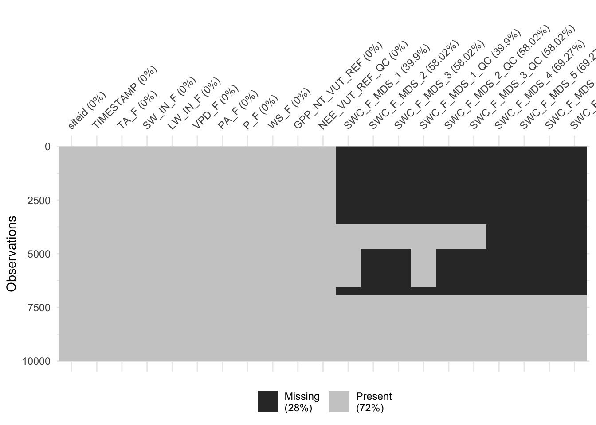
Note three aspects here. First, the color-mapping is specified within aes() in the ggplot() function call and then adopted for all subsequent additions of geoms. Hence, also the geom_smooth() thus takes the color information, and not by a “hard-coded” specification of color = inside the geom_smooth() call as done in Fig. 4.3.
Second, we specified a formula for the linear regression “smooting curve” to force the lines through the origin (y ~ x + 0). This is motivated by our a priori understanding of the process generating the data: when solar radiation is zero, photosynthesis (and hence GPP) should be zero.
Third, we chose a color palette that reflects the cyclic (or periodic) nature of the categories (months). January is closer to December than it is to April. Therefore, their respective colors should also be closer in the color space. An appropriate palette for this is "romaO" from the {scico} package.
Separation into sub-plots
Yet another “mapping” is available with facet_wrap(). It separates the visualisation into different sub-plots, each showing only the part of the data that falls into the respective category, separated by facet_wrap(). Note, this mapping is not dealt with the same way as other aesthetics - not with specifying it with aes()), but with adding the facet_wrap() with a + to the ggplot() object. The variable by which facet_wrap() separates the plot has to be specified as an argument with a preceeding ~. Here, this is ~month.
ggplot(
data = daily_fluxes, # reusing the previously subset data (see above)
aes(x = SW_IN_F, y = GPP_NT_VUT_REF)) +
geom_point(alpha = 0.4) +
geom_smooth(formula = y ~ x + 0, method = "lm", color = "red", se = FALSE) +
labs(x = expression(paste("Shortwave radiation (W m"^-2, ")")),
y = expression(paste("GPP (", mu,"mol CO"[2], " m"^-2, "s"^-1, ")")) ) +
facet_wrap(~month)
You may object here that a linear regression is not a good model for our data. Instead, the relationship looks saturating, as indicated for example by the data in August. But we’ll get to modelling in later chapters. Nevertheless, the two visualizations above confirm our suspicion that the light-GPP relationship varies between months - a demonstration for why data visualization is an integral part of the scientific process.
4.2.2.7 Time series
A time series plot can be regarded as a special case of a regression of two variables. In this case, one variable is regressed against time. A defining aspect of time is that there is a natural order in time steps. Therefore, it makes sense to visualize temporal data using lines that connect the points using geom_line(). The example below shows the time series of daily GPP in three years.
ggplot(
data = daily_fluxes,
aes(x = date, y = GPP_NT_VUT_REF)) +
geom_line() +
labs(title = "Line plot",
x = "Time",
y = expression(paste("GPP (", mu,"mol CO"[2], " m"^-2, "s"^-1, ")"))) +
theme_classic()In the line plot above, we see a spurious-looking part of the time series in the first third of year 2004. Is this bad data that should be removed? Also, in winter of 2005/2005, some daily GPP values appear as high as a typical summer level of GPP. Is this bad data? Remember, that in Chapter 3, we aggregated the half-hourly half_hourly_fluxes data frame to a daily data frame daily_fluxes from which data is visualized above. The aggregation kept a record of the fraction of actually measured (not gap-filled) half-hourly data points per day (f_measured). This yields a “data quality axis”. Is there a pattern between f_measured and the presumably bad data? Discerning such patterns is often only possible with a suitable visualization. What is suitable here?
A solution is to “map” f_measured to the color axis. When adding such an additional mapping to visualisation dimensions (“aesthetics”), we have to specify it using aes(). This only affects the points and the color of points, while the lines and points and their position in x-y space is shared. Hence, we write aes(x = date, y = GPP_NT_VUT_REF) in the ggplot() function call (indicating that all subsequent additions of geom_ layers share this x-y mapping); while aes(color = f_measured) is specified only in the geom_point() layer.
ggplot(
data = daily_fluxes,
aes(x = date, y = GPP_NT_VUT_REF)) +
geom_line() +
geom_point(aes(color = f_measured), size = 0.9) +
labs(x = "Time",
y = expression(paste("GPP (", mu,"mol CO"[2], " m"^-2, "s"^-1, ")"))) +
scale_color_viridis_c(direction = -1) + # inverse color scale is more intuitive here
theme_classic()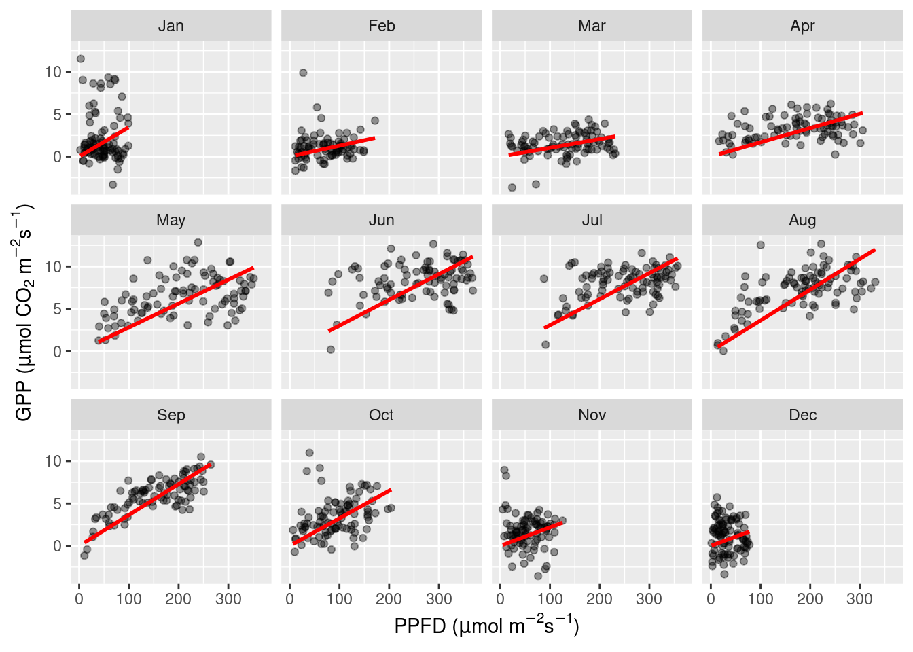
We observe the presumably bad data appear in yellow, and are therefore indeed characterised with a particularly low fraction of actually measured data from which their values are derived. This is an insight we would never have reached by just looking at the naked values in our data frames. Data visualizations are essential for guiding analyses and data processing throughout all steps. Having learned this, we now have a justification for applying further data filtering criteria.
4.2.2.8 Periodic data
The seasons are an important axis of variation in our data. Hence our data are periodic - with a periodicity of 365 days in the daily_fluxes dataset and with both 12 hours and 365 days in the half_hourly_fluxes dataset. A polar coordinate system, instead of a cartesian system, lends itself to displaying periodic data. A polar coordinate system reflects the fact that, for example, January 1st is closer to December 31st, although they are located on the extreme end of a linear spectrum of days in a year. In a polar coordinate system, the x-axis spans the angle (360\(^\circ\), like a clock), while the y-axis spans the radius (distance from the center). This is specified by changing the coordinate system of the ggplot object by + coord_polar().
Below, we first aggregate the data to get a mean seasonal cycle from daily_fluxes (a, b), and to get a mean diurnal (daily) cycle from June data in half_hourly_fluxes (c, d). To get the mean seasonal cycle, we first determine the day-of-year (counting from 1 for January first to 365 for December 31st) using the {lubridate} function yday().
# prepare plot data
daily_mean_fluxes <- daily_fluxes |>
mutate(doy = yday(date)) |>
group_by(doy) |>
summarise(GPP_NT_VUT_REF = mean(GPP_NT_VUT_REF))
# seasonal cycle, cartesian
plot_1 <- ggplot(
data = daily_mean_fluxes,
aes(doy, GPP_NT_VUT_REF)) +
geom_line() +
labs(y = expression(paste("GPP (", mu,"mol CO"[2], " m"^-2, "s"^-1, ")")),
x = "Day of year")
# seasonal cycle, polar
plot_2 <- ggplot(
data = daily_mean_fluxes,
aes(doy, GPP_NT_VUT_REF)) +
geom_line() +
coord_polar() +
labs(y = expression(paste("GPP (", mu,"mol CO"[2], " m"^-2, "s"^-1, ")")),
x = "Day of year")
# prepare plot data (diurnal step)
daily_mean_hourly_fluxes <- half_hourly_fluxes |>
mutate(month = month(TIMESTAMP_START)) |>
filter(month == 6) |> # taking only June data
mutate(hour = hour(TIMESTAMP_START)) |>
dplyr::group_by(hour) |>
dplyr::summarise(GPP_NT_VUT_REF = mean(GPP_NT_VUT_REF))
# diurnal cycle, cartesian
plot_3 <- ggplot(
data = daily_mean_hourly_fluxes,
aes(hour, GPP_NT_VUT_REF)) +
geom_line() +
labs(y = expression(paste("GPP (", mu,"mol CO"[2], " m"^-2, "s"^-1, ")")),
x = "Hour of day")
# diurnal cycle, polar
plot_4 <- ggplot(
data = daily_mean_hourly_fluxes,
aes(hour, GPP_NT_VUT_REF)) +
geom_line() +
coord_polar() +
labs(y = expression(paste("GPP (", mu,"mol CO"[2], " m"^-2, "s"^-1, ")")),
x = "Hour of day")
# combine plots
cowplot::plot_grid(plot_1, plot_2, plot_3, plot_4, ncol = 2, labels = "auto")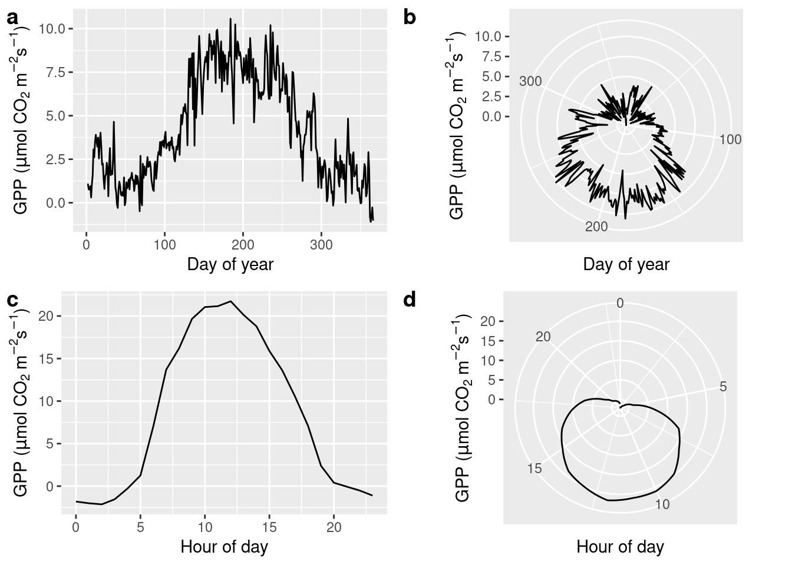
4.2.2.9 Density along two continuous variables
Scatter plots can appear “overcrowded” when points are plotted on top of each other and potentially important information is lost in the visualization.
ggplot(
data = half_hourly_fluxes,
aes(x = SW_IN_F, y = GPP_NT_VUT_REF)) +
geom_point() +
labs(x = expression(paste("Shortwave radiation (W m"^-2, ")")),
y = expression(paste("GPP (", mu,"mol CO"[2], " m"^-2, "s"^-1, ")"))) +
theme_classic()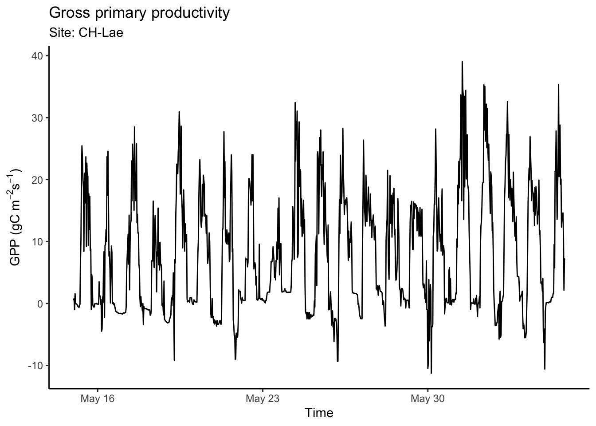
To avoid obscuring important details about the data, we may want to visualise the density of points. We want to plot how many points fall within bins of a certain range of values in GPP and shortwave radiation, or, in other words, within grid cells in the GPP-radiation space. We can visualize the data, for example, with a raster plot that measures the density using stat_density_2d() or with a binning into hexagonal cells using the simple geom_hex() layer.
# density raster
ggplot(
data = daily_fluxes,
aes(x = SW_IN_F, y = GPP_NT_VUT_REF)) +
stat_density_2d(
geom = "raster", # the geometric object to display the data
aes(fill = after_stat(density)), # using `density`, a variable calculated by the stat
contour = FALSE
) +
scale_fill_viridis_c() +
labs(x = expression(paste("Shortwave radiation (W m"^-2, ")")),
y = expression(paste("GPP (", mu,"mol CO"[2], " m"^-2, "s"^-1, ")")) ) +
theme_classic() +
scale_x_continuous(expand = c(0, 0)) + # avoid gap between plotting area and axis
scale_y_continuous(expand = c(0, 0))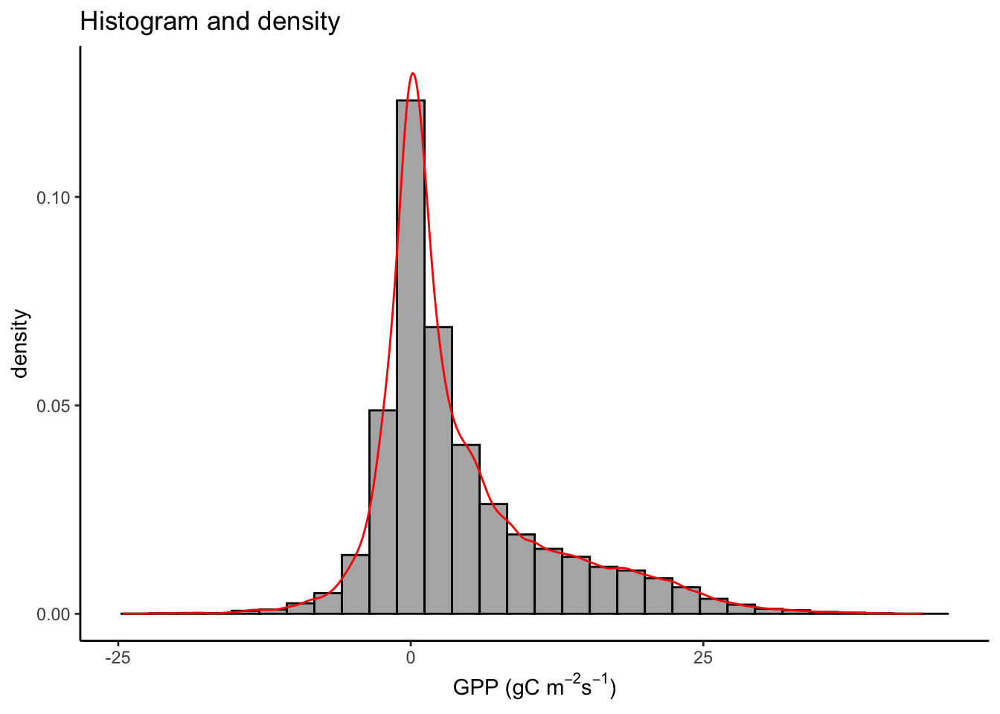
# density hexagonal bins
ggplot(
data = daily_fluxes,
aes(x = SW_IN_F, y = GPP_NT_VUT_REF)) +
geom_hex() +
scale_fill_viridis_c() +
labs(x = expression(paste("Shortwave radiation (W m"^-2, ")")),
y = expression(paste("GPP (", mu,"mol CO"[2], " m"^-2, "s"^-1, ")")) ) +
theme_classic()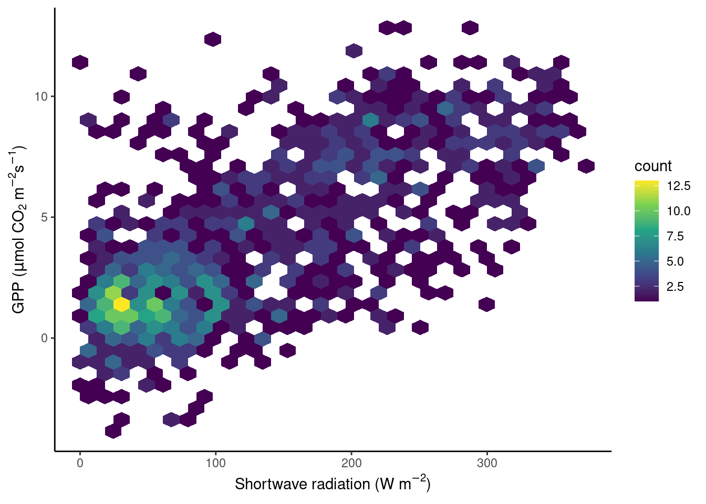
An alternative solution to “overplotting” points is described in this blog post.
4.2.2.10 Raster data
In the figure above, the density of points in a grid of equally spaced bins along two axes, one for each variable, was shown. Often, data is organised along a grid of equally spaced bins by nature - think a matrix or raster data. Examples of such data are climate model outputs (which often span more than two dimensions), remote sensing images (again, just one “layer” of an image or one “band”), or images in general. In these cases, two (often spatial) axes span the space of a cartesian coordinate system and the value within each pixel is mapped onto the color aesthetic.
The base-R function image() can be used to visualize such spatial data as images.
image(volcano)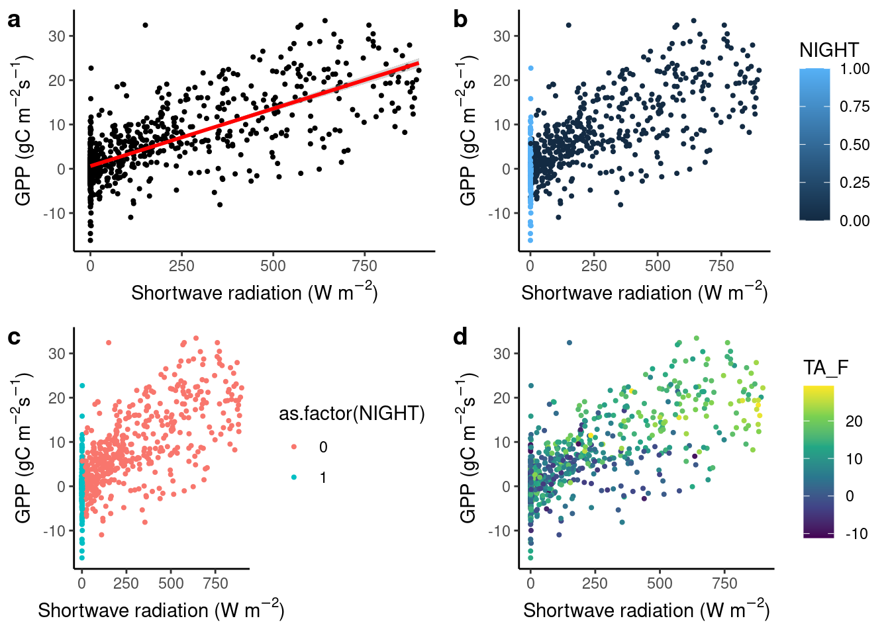
{ggplot2} forces us to the data frame paradigm and therefore doesn’t lend itself naturally to raster data. We can, however, convert raster data into a data frame in a separate step.
# example from https://github.com/thomasp85/scico
df_volcano <- tibble(
x = rep(seq(ncol(volcano)), each = nrow(volcano)),
y = rep(seq(nrow(volcano)), ncol(volcano)),
height = c(volcano) - 140 # subtract 140 for example below
)
ggplot(
data = df_volcano,
aes(x = x, y = y, fill = height)) +
geom_raster() +
scico::scale_fill_scico(palette = 'bukavu', midpoint = 0) +
scale_x_continuous(expand = c(0, 0)) +
scale_y_continuous(expand = c(0, 0))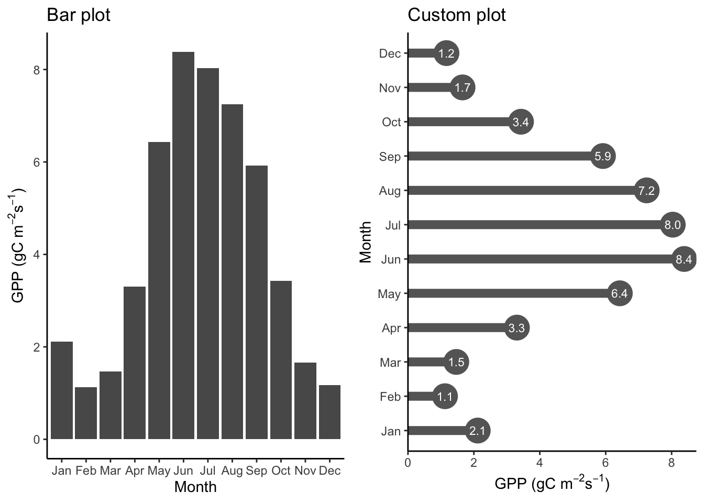
In this example, we used the multisequential "bukavu" color scale from the {scico} package to reflect values above 0 (e.g., elevation above the sea level) and below 0 (ocean depth).
4.2.2.11 Geospatial data
Raster data often reflects values in geographic space. Also points and polygons may be located in geographic space. This opens the door to geospatial data visualisation (a.k.a. creating maps) which does not form part of this course.
Interested readers can find more content on geospatial data visualisation here:
- Timo Grossenbacher’s blog on geographic data journalism (link)
- Koen Hufken’s blog containing various worked example.
4.2.3 Writing to file
Plots can be saved in figure files in any common format. To write the figure that was rendered last into a file, call the ggsave(filename) function. The format of the image is automatically determined based on filename. E.g., a PDF is created if the filename is. For example,
plotme
ggsave("./figures/plot_gpp.pdf")… saves the plot generated by printing plotme (created in the code chunk preceeding Fig. 4.1) into a PDF located in the appropriate (see also 1.2.7.1 what’s “appropriate”) sub-directory. Plots are ideally saved as vector graphics - the types of graphics that are defined by geometric shapes (polygons, lines, points), not rasters. Vector graphics never look “pixelated”. When saving a ggplot object as PDF, it’s saved as a vector graphic. Other vector graphics formats are .eps, or .svg. Beware however, when plotting very large numbers points, lines, or polygons, file sizes can get excessively large and render very slowly. In such cases, consider representing the density of overlaying points which creates a vector graphics, e.g., of rectangles (raster), hexagons, or other polygons (see Sec. 4.2.2.9). Alternatively, plots may be saved as a raster image (e.g., PNG with files ending on .png, giving the option to manually set the resolution with the argument dpi) or a compressed image format (e.g, JPEG). When rendering an RMarkdown file, figures are placed in the output and, unless explicitly triggered with a ggsave() call inside an executed code chunk, no separate figure files are created.
4.3 Exercises
Spurious data
In Section 3.2.10.2, we discovered that certain values of GPP_NT_VUT_REF in the half-hourly data half_hourly_fluxes (to be read from file data/FLX_CH-Lae_FLUXNET2015_FULLSET_HH_2004-2006.csv) are repeated with a spuriously high frequency. Determine all values of GPP_NT_VUT_REF that appear more than once in half_hourly_fluxes and label them as being “spurious”. Visualise the time series of the first year of half-hourly GPP, mapping the information whether the data is spurious or not to the color aesthetic.
Then aggregate half-hourly to daily data, taking the mean of GPP_NT_VUT_REF and recording the proportion of underlying half-hourly data points that are “spurious”. Visualise the time series of daily GPP_NT_VUT_REF with the color scale indicating the proportion of spurious half-hourly data that was used for determining the respective date’s mean GPP.
Hint: The base-R function
duplicated(df, ...)takes a data framedfas input and returns a logical vector of lengthnrow(df)specifying whether a row has an exact duplicate in the same data frame.
Identifying Outliers
A key part of data cleaning is to detect and understand outliers. Visualisations can help. Your task here is to find outliers in GPP_NT_VUT_REF.
First, using the half-hourly fluxes data, determine “outliers” as those values of GPP_NT_VUT_REF that fall outside \(( Q_1 - 1.5 (Q_3 - Q_1)\) to \(Q_3 + 1.5 (Q_3 - Q_1)\). Plot GPP_NT_VUT_REF versus shortwave radiation and highlight outliers in red.
Hint: Use
boxplot.stats()to return a list containing a vector of the data points which lie beyond the extremes of the whiskers of the boxplot.
Hint: Use
scale_color_manual()to mannually define the color scale.
Now, we want to “control” for the influence of shortwave radiation on GPP and define outliers with respect to the distribution of residuals of the linear regression between the two variables. Relax the definition of what is considered an outlier by setting adjusting their definition to falling outside \(( Q_1 - 5 (Q_3 - Q_1)\) to \(Q_3 + 5 (Q_3 - Q_1)\). Again, plot GPP_NT_VUT_REF versus shortwave radiation and highlight outliers in red.
Hint: Fit the linear regression model as
lm(GPP_NT_VUT_REF ~ SW_IN_F, data = half_hourly_fluxes)and obtain the residuals from the object returned by thelm()function (see ‘Value’ in its help page).
Hint: The output of
boxplot.stats(x)is a list, containing an elementout.outis a named vector of the oulier values with names referring to the row numbers ofx. Useas.integer(names(boxplot.stats(x)$out))to get row numbers.
Visualising diurnal and seasonal cycles of GPP
As explored in the previous Chapter’s exercises, GPP varies over diurnal and seasonal cycles. Create a publication-ready figure that visualises the mean diurnal cycle of GPP for each day-of-year (mean across multiple years). Make sure that the figure is properly labelled, and legible for readers with a color vision deficiency.
Hint: To get the diurnal and seasonal cycles, summarise the half-hourly data by the hour of the day and the day of the year simultaneously using multiple grouping variables within
group_by()and calculate mean values for GPP for each group.
Hint: Chose an appropriate visualisation that maps the hour-of-day to the x-axis and the day-of-year to the y-axis.
Trend in carbon dioxide concentrations
This exercise explores the longest available atmospheric CO\(_2\) record, obtained at the Mauna Loa observatory in Hawaii. Atmospheric CO\(_2\) in the northern hemisphere is characterised by seasonal swings, caused by the seasonal course of CO\(_2\) uptake and release by the terrestrial biosphere. We’ve explored the seasonality of the CO\(_2\) uptake measured at one site (in Switzerland) extensively in this an previous chapters. Your task here is to calculate and visualise the long-term trend of CO\(_2\). Follow these steps:
- Download the monthly mean CO2\(_2\) data as a CSV file from here and read it into R.
- Make a simple graph for visualizing the monthly CO\(_2\) time series.
- Write a function that computes a 12-month running mean of the CO\(_2\) time series. The running mean for month \(m\) should consider values of \(m-5\) to \(m+6\). Define arguments for the function that let the user specify the width of the running mean “box” (i.e., setting the \(5\) and \(6\) to any other integer of choice)
- Make a publication-ready figure that shows the monthly and the 12-month running mean time series of the CO\(_2\) record.
Hint: You don’t need to clean the .txt file by hand, find a suitable function in R.
Hint: Arguments to your function may be a vector of the original (monthly) data and a parameter defining the number of elements over which the mean is to be taken.
Hint: To automatically render the time axis with ggplot, you can create a time object by combining the year and month columns:
lubridate::ymd(paste(as.character(year), "-", as.character(month), "-15"))
4.4 Report Exercises
Telling a story from data
In the previous exercises and tutorials, you have learned how to wrangle data, fit simple linear regression models and identify outliers, create figures for temporal patterns, and develop and test hypotheses. Use these skills to analyze the airquality dataset (directly available in R, just type datasets::airquality into the console). The target variable of this dataset is the ozone concentration and your task is to tell a story about it. Look at the other variables in the dataset and become creative! Think of what patterns and relationships could be interesting to talk about. Your report must include the following elements:
- A description of the
airqualitydataset (where is it from, what are the variables’ units, etc.). - A specific question that you want to answer through analyzing the data.
- At least three statistical metrics from your dataset that aid you in answering your question (e.g., mean values, ranges, etc.).
- At least three publishable figures or tables that show important relationships that aid you in answering your question (e.g., outliers, temporal patterns, scatterplots, etc.).
- Make sure to interpret and discuss your results and hypotheses. Why were you right / why were you wrong?
Important: The text alone should not exceed one A4 page (max. 400 words). Hint: Metrics, figures, tables, etc. without any written-out explanation what they show do not count. Hint: To get more background information on the data, use the help functionalities in RStudio.
Deliverables for the report
Following the same requirements as mentioned in 3.5, present your solutions in a file called re_airquality.Rmd, save it in your vignettes folder alongside the HTML version, and make sure that your code is reproducible (make sure your .rmd is knittable, that all data is available, that paths to that data work, etc.).